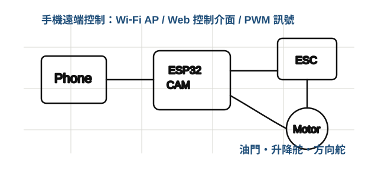

Day 17月28日飛行原理
航空器基本原理與系統概念
- 飛機四力：升力、重力、推力、阻力。
- 翼型、迎角、機翼面積、升力與失速的基本關係。
- 重心、穩定性與尾翼的角色。
- 控制面：升降舵、方向舵與油門控制。
- ESP32-CAM 手機遠端控制概念：Wi‑Fi AP、網頁介面、控制訊號。
- 學習產出：設計紀錄表、初步機體配置草圖、重心與控制面檢查清單。
每日皆包含可記錄的學習產出，方便學生整理實作照片、測試表、問題修正與成果說明。
以高中以上程度可理解的方式，串接物理、電子、程式與通訊。
由升力公式、翼型、迎角與重心位置出發，理解飛機「能飛」與「能穩定飛」的差異。
以 ESP32-CAM 控制伺服與 ESC，認識 GPIO、PWM、供電、接地與訊號安全。
手機連線到 ESP32-CAM，透過網頁按鈕或滑桿送出控制指令，理解 AP、IP 與 HTTP 的基本概念。

下列項目可作為學生後續整理自主學習、探究紀錄、專題作品或科學展示的素材；課程本身不保證任何升學結果。
飛機為何無法爬升？為何會偏航？重心與舵量如何影響結果？
機體照片、尺寸圖、電控接線圖、材料選擇與加工過程。
重心、舵面角度、油門反應、試飛觀察與修正前後比較。
整理遇到的問題、判斷依據、修正策略，以及未來可改進的設計。